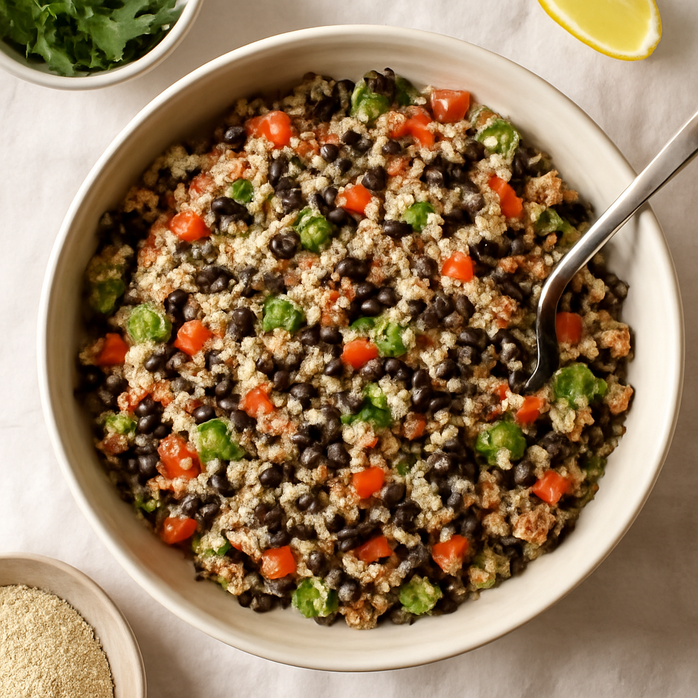

Monday — Quinoa and Black Bean Salad

Cook Time: 30 minutes
Method: Pressure Cooker
veganquinoasaladhealthy
Ingredients for 6
- 2 cups quinoa
- 2 cans black beans (rinsed)
- 1 red bell pepper (diced)
- 1 avocado (diced)
- 1/4 cup cilantro (chopped)
- 1 lime (juiced)
- Salt to taste
Instructions
- Rinse quinoa and add to pressure cooker with 4 cups of water.
- Cook on high pressure for 1 minute and allow natural release for 10 minutes.
- In a large bowl, mix cooked quinoa, black beans, bell pepper, avocado, cilantro, lime juice, and salt.
Toddler Notes
- Cut avocado into small cubes to prevent choking.
- Ensure quinoa is fluffy and easily mashable for young children.
← Back to weekly plan